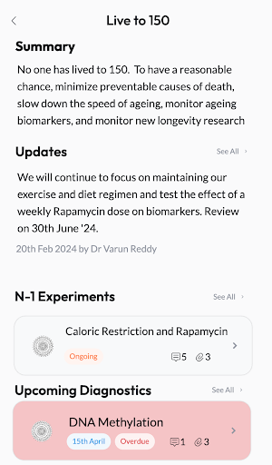
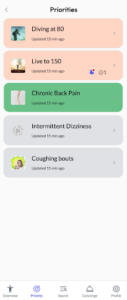
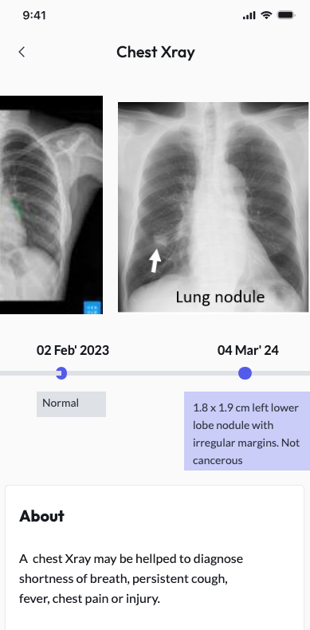
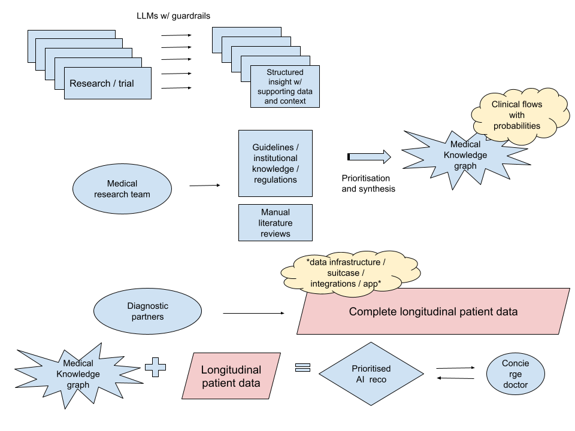
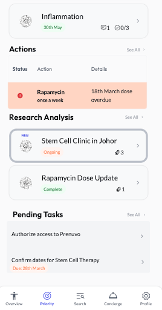
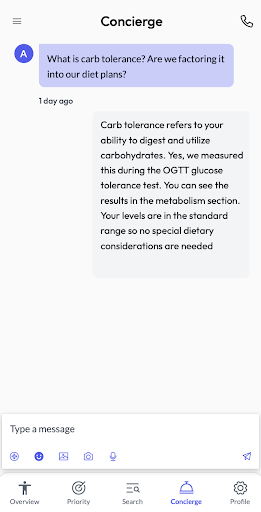

Elyx App: Your Health Briefcase
The Elyx App is your health briefcase, offering a comprehensive overview of your well-being. It supports your entire health journey by storing all your health data, accessible anytime and anywhere.


Data Dashboard
Our health dashboard offers a panoramic view of your health, highlighting missing diagnostics, potential risks, and benchmarks against population groups. It is a dynamic tool grounded in the latest research, empowering you to take control of your health with comprehensive insights and actionable advice.
Health Records Consolidation
We compile and organise all your medical records, past and present, ensuring a seamless transition into an accessible, analytic-ready form within your Elyx App. This ensures your health data is always at your fingertips, ready for insightful interpretation.

Medical Research Synthesis
Knowledge is the cornerstone of Elyx. Our concierge team ensures you're equipped with the necessary insights to make informed decisions about your health, providing clarity and confidence throughout your health journey.
We stay at the forefront of medical research by leveraging Artificial Intelligence to bring you the latest and most relevant findings. For instance, should a new, proven anti-aging treatment become available, we're prepared to incorporate it into your personalised health plan promptly. The reverse holds true, with the low signal to noise ratio in longevity research output, it is important to weed out interventions and tests that have minimal or negative impact on your health.
For those with specific health conditions, we delve deep to identify the most suitable specialists and leading institutions worldwide, thoroughly exploring all treatment avenues, including their potential risks and benefits. For example, in the case of degenerative discs, we would consolidate the research for the various interventions, including surgical and non surgical and rank them by the top option to pursue with the risks and benefits. This would be led by a team of doctors and biomedical researchers.

Project management - Keep a Pulse on What's Essential
Elyx integrates elements of project management into your healthcare framework, enabling the simultaneous tracking of various goals and challenges. With the Elyx app, team members can seamlessly collaborate, providing real-time updates on progress, prerequisites, and obstacles associated with each project, ensuring efficient coordination and management of your health-related tasks.

Concierge: Personalised Health Navigator
Our Concierge Experience is a bespoke medical partnership designed to navigate the complexities of modern healthcare with ease. It facilitates end-to-end care for all your medical concerns. Through the Elyx App, you have access to the concierge team to assist you with any queries.
